Visualizations
Research Gallery
CFD simulations, experimental measurements, and flow visualizations spanning sweeping jet film cooling, fluidic oscillators, turbine aerothermodynamics, turbulent combustion, and spray dynamics. Animated entries show time-accurate unsteady flow fields.
Sweeping Jet Film Cooling
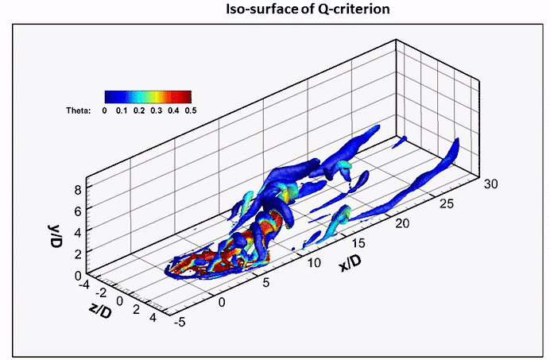
AnimatedSweeping Jet Film Cooling (CFD)
Time-accurate unsteady RANS simulation showing the oscillating coolant jet and counter-rotating vortex structure over the blade surface.
CFD
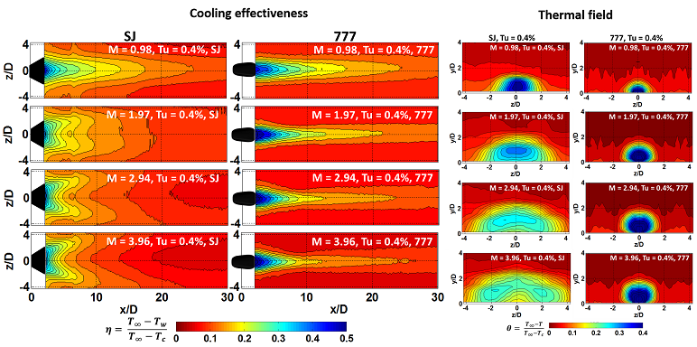
Sweeping Jet Film Cooling (Exp)
Adiabatic film cooling effectiveness measured by IR thermography on a flat plate. Shows the wide lateral spreading of coolant from sweeping jet holes versus conventional shaped holes.
Experimental
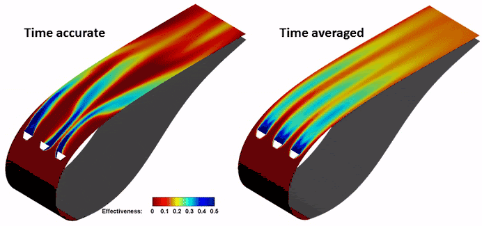
AnimatedSweeping Jet Film Cooling on a Turbine Vane
Time-accurate adiabatic film effectiveness on the suction side of an OSU nozzle guide vane. Animation shows the periodic sweeping motion of the oscillating coolant jet.
CFD
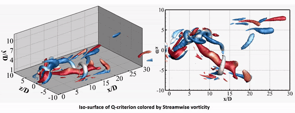
AnimatedSweeping Jet in a Crossflow (CFD)
Unsteady RANS simulation of an oscillating jet interacting with crossflow. Shows the two alternating streamwise vortices — opposite in sense to the traditional CRVP — responsible for improved lateral coolant spreading.
CFD
Impingement Cooling
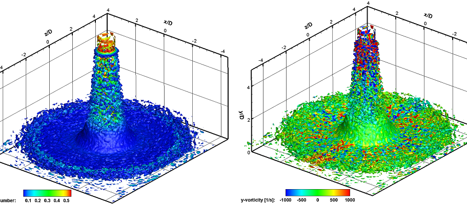
Steady Jet Impingement (CFD)
Iso-surface of Q-criterion colored by Mach number and vorticity. Shows the organized vortex structure generated by a steady circular impinging jet on a flat surface.
CFD
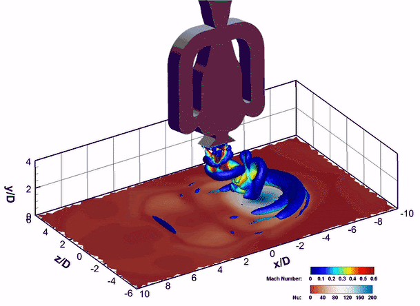
AnimatedSweeping Jet Impingement (CFD)
Iso-surface of Q-criterion colored by Mach number and surface Nusselt number distribution. The sweeping motion produces a broader, more uniform heat transfer footprint compared to the steady jet.
CFD
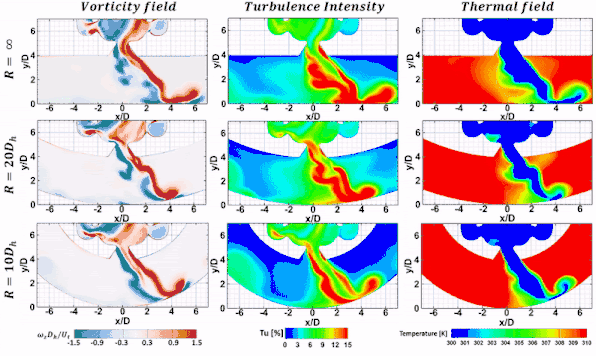
AnimatedSweeping Jet Impingement on a Curved Surface (URANS)
Unsteady flowfield of an oscillating jet impinging on a curved target surface, representative of a turbine leading edge. Shows how surface curvature affects sweep angle, jet attachment, and heat transfer uniformity.
CFD
Fluidic Oscillators & Flow Control
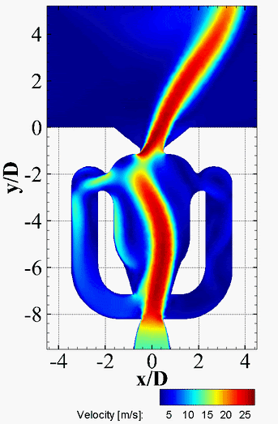
AnimatedFluidic Oscillator Flow Field (CFD)
Time-accurate velocity field inside a sweeping jet fluidic actuator. The animation reveals the feedback channel mechanism that drives self-sustained oscillation without moving parts.
CFD
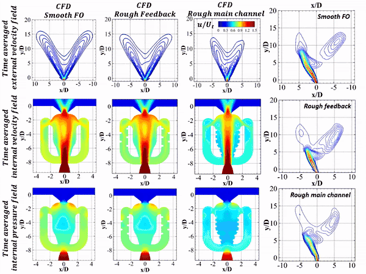
AnimatedRoughness Effect on Fluidic Oscillator Flow Field (CFD)
Unsteady simulation showing how internal surface roughness alters the oscillation frequency, sweep angle, and jet symmetry of a fluidic actuator. Main channel roughness above a critical threshold suppresses oscillation entirely.
CFD
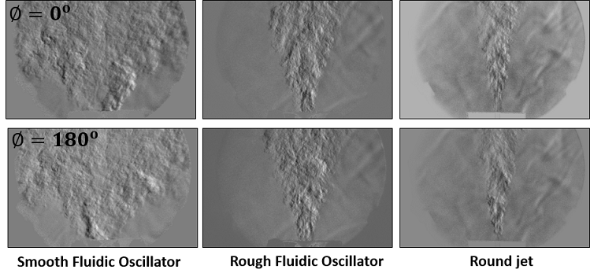
Schlieren Imaging of Fluidic Oscillator (Exp)
High-speed Schlieren shadowgraph of the external jet exiting a fluidic oscillator nozzle. Density gradients reveal the oscillating jet structure, shock cells, and entrainment in the near-field plume.
Experimental
Combustion & Multiphase
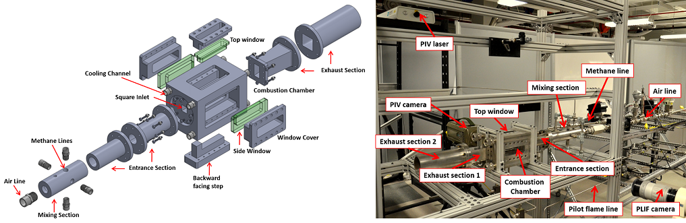
Optically Accessible Turbulent Combustor (Exp)
High-intensity premixed air-methane combustor with backward-facing step flame stabilization and quartz optical access on three sides. Used for TR-PIV and Schlieren diagnostics of turbulent reacting flows at the University of Texas El Paso (NASA cSETR).
Experimental
Interested in the underlying research?
Browse the full list of journal papers, conference proceedings, and invited talks behind these visualizations.
View Publications Explore Research